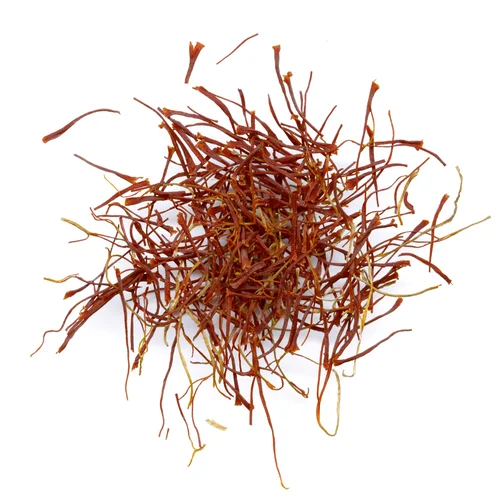

Where India's Royal
Flavors Come Alive
Step into a sanctuary of architectural majesty and feast on ancient recipes crafted for emperors, kings, and queens.
Enter The BanquetStep into a sanctuary of architectural majesty and feast on ancient recipes crafted for emperors, kings, and queens.
Enter The Banquet
In the royal kitchens of Jaipur and Delhi, cooking was an act of worship and high art. Rulers employed master chefs called 'khansamas' to formulate dishes that balanced spice chemistry with health and vigor.
At Maharaja, we respect this legacy. We source organic saffron from Kashmir, hand-churned ghee from local diaries, and custom stone-ground spice mixtures prepared weekly in our kitchens. Every plate is structured to give you a taste of the grand banquets that once echoed through palace corridors.

Slow-braised lamb shanks cooked in a rich gravy of Kashmiri red chilies, mountain saffron, and cockscomb flower extract.
₹1,850
Tandoor-roasted free-range chicken finished in a smooth tomato velvet gravy enriched with organic butter and cashews.
₹1,650
Jumbo tiger prawns simmered in freshly squeezed coconut milk, raw mango strips, and tempered mustard seeds.
₹1,950India's wealth was built on the aromatic gold of spices. Below are the cornerstones of our royal dishes.

Hand-plucked saffron stigma, adding a deep gold hue and delicate honey-like fragrance.

The queen of spices, adding sharp, sweet herbal notes to both our savory gravies and desserts.

An aromatic wonder delivering notes of licorice that form the base of our slow-cooked biryanis.
Our signature dining ritual. An majestic brass platter containing eleven distinct seasonal dishes, celebrating all six tastes (sweet, sour, salty, bitter, pungent, and astringent) in perfect ayurvedic harmony.

Celebrate India's heritage during special festival weeks. We construct traditional communal tables serving street-food delights and slow-roasted meats, accompanied by live sitar players and traditional floral decorations.

Chef Aarav Sharma was raised in Lucknow, the heartland of Awadhi cuisine. He learned the secrets of dum-cooking (slow steaming under dough seals) from his grandfather, who served in the kitchens of local royalty. Aarav preserves these exact methods, refusing to take modern shortcuts.
"True heritage is not found in books. It is recorded in the heat of the tandoor and the aroma that escapes when the clay pot seal is broken."